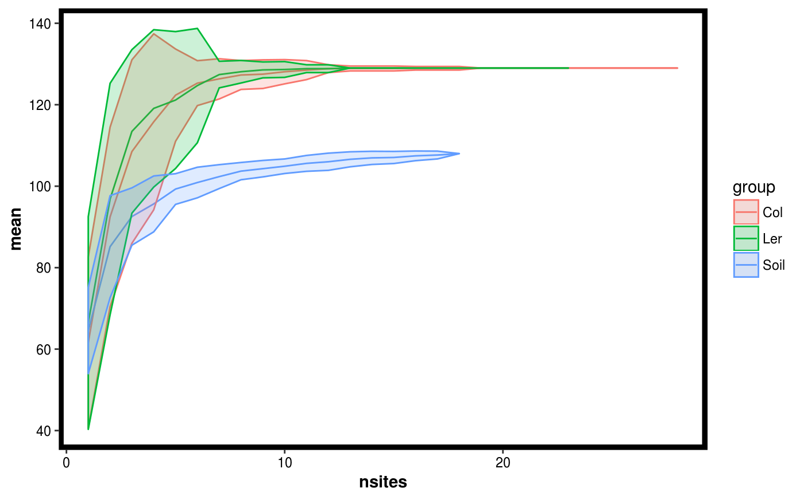

R/site_diversity.r
compare_site_diversity.RdPerforms permuation to estimate diversity as a function of adding sites. And does this for samples grouped according to a factor.
compare_site_diversity(...) # S3 method for default compare_site_diversity(Tab, Map, factor, divfun = total_richness, nperm = 20) # S3 method for Dataset compare_site_diversity(Dat, factor, divfun = total_richness, nperm = 20)
| Tab | A numeric matrix of samples as columns and taxa as rows. |
|---|---|
| Map | A data.frame containing the variables to be modelled as columns and samples as rows. The rows should be named with sample IDs and must correspond to the column names from x if an abundance matrix was passed |
| factor | String representing the name of the variable to be used for grouping samples. Must correspond to a header name in the Mat portion of the Dataset object. |
| divfun | Function that returns a diversity estimate given a matrix of samples. See total_richness and examples to see how to define your function. |
| nperm | Number of permutations to perform. |
| Dat | A Dataset object. |
A data.frame of class site.diversity which contains the following variables:
Mean diversity value of all permutations
Standard deviation of the diversity estimates estimated from the permutations.
Number of sites (ie. samples).
Variable used for selecting the samples.
data(Rhizo) data(Rhizo.map) data(Rhizo.tax) Dat <- create_dataset(Rhizo,Rhizo.map,Rhizo.tax) sitediv.accession <- compare_site_diversity(Dat = Dat,factor = "accession", divfun = total_richness, 20) plotgg(sitediv.accession)# The following code requires the vegan package # divfun <- function(x){ # if(!is.null(ncol(x))) # x <- rowSums(x) # s <- vegan::diversity(x) # return(s) # } # sitediv.accession <- compare_site_diversity(Dat = Dat, # factor = "accession", # divfun = divfun, 20) # plotgg(sitediv.accession, alpha = 0.3) + # scale_color_brewer(palette = "Set3") + # scale_fill_brewer(palette = "Set3")